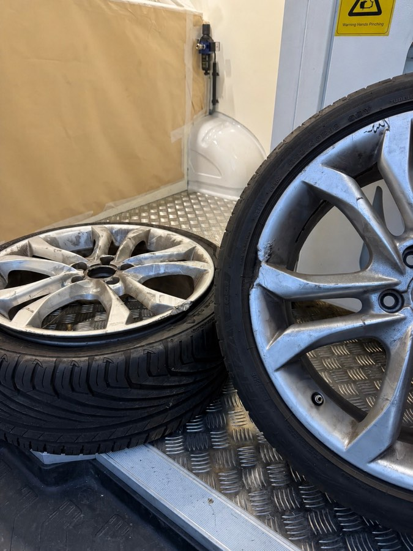
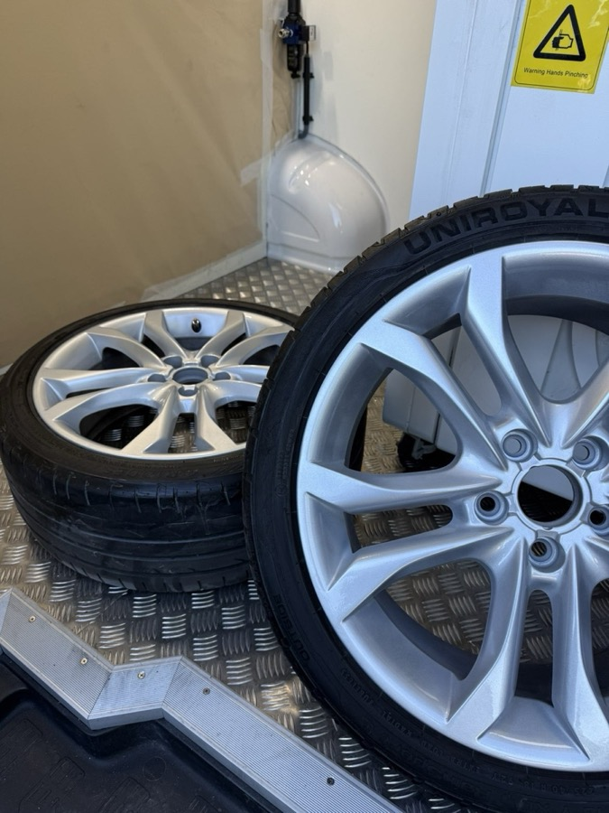

L'atelier mobile
On vient à vous, à Bourgoin-Jallieu

L'équipement
Matériel professionnel embarqué
Isère · Bourgoin-Jallieu · 38300
Spécialiste de la rénovation de jantes à Bourgoin-Jallieu et dans toute la zone Porte de l'Isère. On se déplace directement chez vous — chocs de parking commercial, retour leasing LOA/LLD, rénovation complète. Résultat showroom garanti.
Ce que nous faisons à Bourgoin-Jallieu
01
Décapage, traitement, peinture, vernis bi-composant. Vos jantes retrouvent leur éclat d'origine — ou mieux.
En savoir plus02
Chocs de chariot, accrochage en parking de grande surface, bord de jante abîmé — on répare à domicile, sans démontage.
Demander un devis03
Avant votre restitution LOA ou LLD, on remet vos jantes à niveau pour éviter les pénalités. Résultat garanti, délai maîtrisé.
En savoir plus04
Jantes noires brillantes, bi-ton sur mesure, couleur personnalisée. Une identité visuelle unique pour votre véhicule.
En savoir plusVéhicules traités à Bourgoin-Jallieu
À Bourgoin-Jallieu, le parc automobile est marqué par les familles et les navetteurs vers Lyon : Peugeot 3008 et 5008, Renault Austral, Volkswagen Tiguan, Dacia Duster. Des véhicules récents souvent en LOA ou LLD, avec des jantes grandes taille dont la moindre rayure fait baisser la valeur résiduelle. Nous intervenons sur toutes ces marques avec le même niveau d'exigence.
Voir nos réalisationsPeugeot
3008, 5008...
Renault
Austral, Captur...
Volkswagen
Tiguan, Golf...
Dacia
Duster, Sandero...
Audi
A3, Q3, Q5...
& autres
Toutes marques
Cas réel · Audi A3 · Bourgoin-Jallieu
Un client de Bourgoin-Jallieu nous contacte avec une Audi A3 en LOA dont la restitution approche. En faisant ses courses dans la zone commerciale Porte de l'Isère, la jante avant droite a heurté un îlot bétonné en manœuvrant — le bord a pris un impact net avec un arrachage de peinture et de vernis sur environ 4 centimètres, aluminium visible. Ce type de dégât est extrêmement fréquent dans les vastes parkings de la zone commerciale de Bourgoin-Jallieu, où les bordures de protection sont parfois mal visibles. En cas de retour leasing, la facture de remise en état chez le concessionnaire peut dépasser 250 € par jante.

Intervention à domicile, véhicule stationné devant le pavillon du client. Décapage soigneux de la zone impactée, rechargement au mastic spécial aluminium bi-composant, ponçage progressif par étapes de grain pour retrouver le profil exact du bord de jante d'origine. Peinture dans la teinte Audi exacte, identifiée par lecture du code couleur sur le véhicule, vernis UV bi-composant résistant aux agents chimiques et aux UV. La jante a passé le contrôle de restitution leasing sans pénalité — résultat indiscernable d'une jante neuve.

Pourquoi REYNOV à Bourgoin-Jallieu
On intervient dans votre allée, votre parking ou à votre domicile. Aucune logistique de votre côté — vous n'avez même pas à déplacer votre voiture.
Chaque intervention est garantie. En cas de défaut constaté, on reprend sans frais — sans discussion.
Peintures bi-composant, vernis UV résistant, séchage professionnel. Le même résultat qu'un atelier officiel — chez vous.
Envoyez vos photos, on vous répond avec un devis précis. Pas d'attente, pas de déplacement pour évaluation.
Vos questions
Oui, à Bourgoin-Jallieu comme dans toute la zone Porte de l'Isère, nous nous déplaçons directement chez vous. Domicile, résidence pavillonnaire, parking d'entreprise ou de grande surface — votre véhicule ne bouge pas. Notre camion atelier est entièrement équipé pour intervenir sur place, même en extérieur.
La Mulatière est à environ 45-50 minutes de Bourgoin-Jallieu via l'A43 en direction de Grenoble. Bourgoin-Jallieu est dans notre zone d'intervention Isère — le déplacement est inclus dans le tarif de la prestation, sans supplément caché.
Oui. Peugeot 3008, 5008, Renault Austral, Volkswagen Tiguan, Dacia Duster — nous intervenons sur tous les modèles familiaux très présents à Bourgoin-Jallieu. Notre équipement est adapté aux finitions alu de 17 à 20 pouces et aux teintes constructeur spécifiques.
Devis sous 24h après réception de vos photos. Intervention généralement possible sous 48h à 72h selon nos disponibilités. Pour les retours LOA/LLD avec date de restitution fixe, nous nous adaptons à votre calendrier — prévenez-nous à l'avance.
Le tarif dépend de la prestation, de la finition et de l'état de vos jantes. Chaque devis est personnalisé — envoyez vos photos via le formulaire et nous vous répondons sous 24h avec une estimation précise, sans engagement.
Devis gratuit sous 24h. On vient à vous dans toute la zone Porte de l'Isère — aucun déplacement de votre côté.